Yi Xiao 肖屹
Tenure-track Professor |
 Google Scholar
Google Scholar GitHub
GitHub ResearchGate
ResearchGateBiography
肖屹，博士，江西吉安人，郑州大学特聘教授。本科毕业于中国地质大学（武汉）数学系，并获华中科技大学计算机双学位，硕、博均毕业于武汉大学，师从袁强强与张良培教授。
研究方向为视频图像处理与计算机视觉，侧重视觉增强、多模融合、遥感信息处理。在IEEE系列汇刊/中科院1区/CCF-A类会议发表论文30余篇，含ESI热点论文4篇，ESI高被引论文10篇，谷歌学术被引3700余次。
主持首批国自然博士生项目，并获国自然青C项目延续资助，入选国家博士后创新人才支持计划、河南省中原青年拔尖人才、首批中国科协青年人才托举工程博士专项、2025年斯坦福全球前2%顶尖科学家。
Yi Xiao is currently a tenure-track professor at Zhengzhou University, working with Prof. Mingliang Xu (徐明亮).
Before that, he received his Ph.D. and M.S. degree from Wuhan University, under the supervision of Prof. Qiangqiang Yuan (袁强强) and Liangpei Zhang (张良培).
He received his B.S. degree from China University of Geoscience and Huazhong University of Science and Technology.
His research interests include image/video processing and computer vision, mainly focusing on low-level vision tasks.
News
- 2025.10: One paper has been accepted by ESWA. Congratulations to Xianpeng Zhang.
- 2025.09: I was named World's Top 2% Scientists in 2025.
- 2025.09: Our paper SpikeSR has been accepted by NeurIPS 2025.
Experience
- 2025.09~now Tenure-track Professor in Zhengzhou University, School of Computer and Artificial Intelligence
- 2022.09~2025.06 Ph.D. in Wuhan University, School of Geodesy and Geomatics
- 2020.09~2022.06 M.S. in Wuhan University, School of Geodesy and Geomatics
- 2018.09~2020.06 B.E. in Huazhong University of Science and Technology, School of Computer Science and Technology
- 2016.09~2020.06 B.S. in China University of Geoscience (Wuhan), School of Mathematics and Physics
Selected Publications
[  Citation: ]
Citation: ]
✝ Equal Contribution * Corresponsing Author
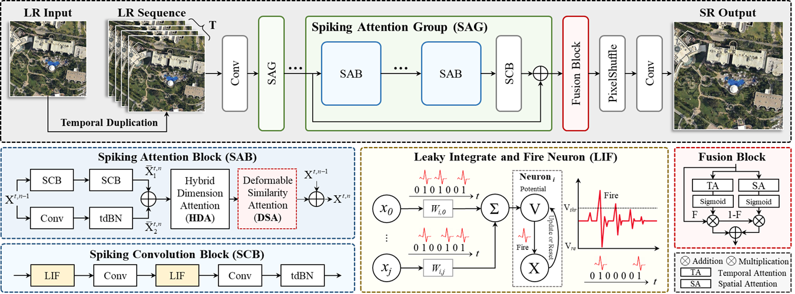 |
|
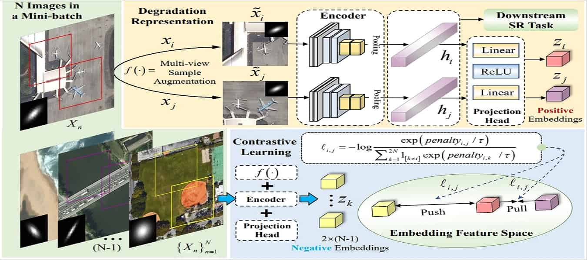 |
|
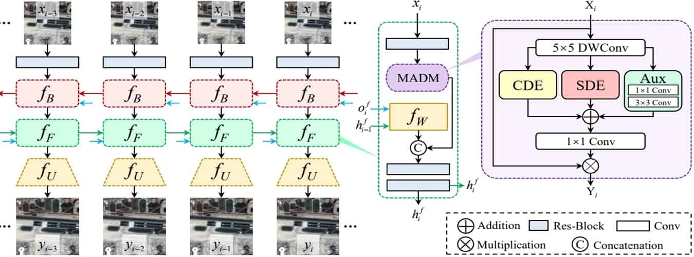 |
Multi-axis feature diversity enhancement for remote sensing video super-resolution |
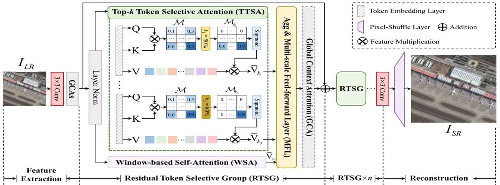 |
TTST: A top-k token selective transformer for remote sensing image super-resolution |
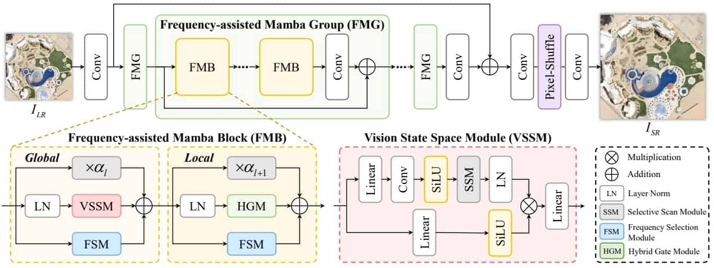 |
Frequency-assisted mamba for remote sensing image super-resolution |
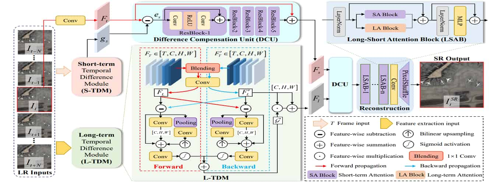 |
Local-global temporal difference learning for satellite video super-resolution |
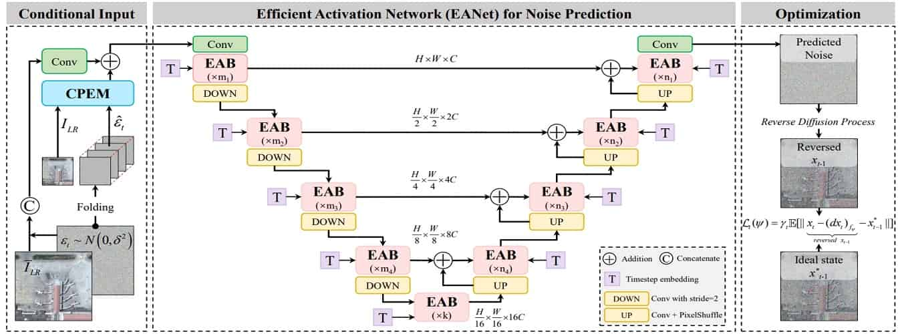 |
EDiffSR: An efficient diffusion probabilistic model for remote sensing image super-resolution |
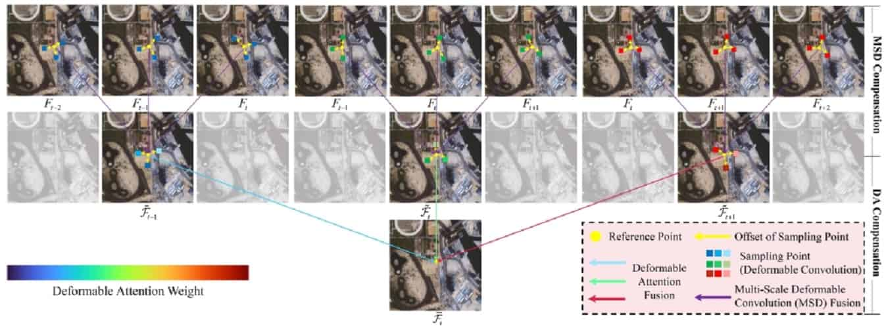 |
|
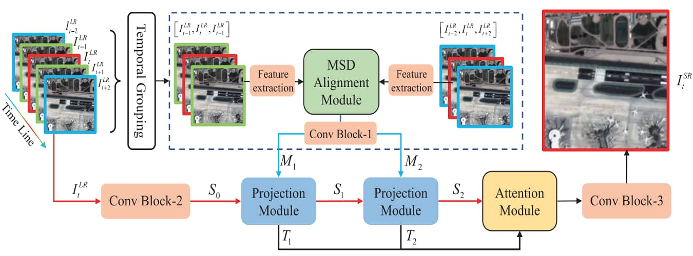 |
|
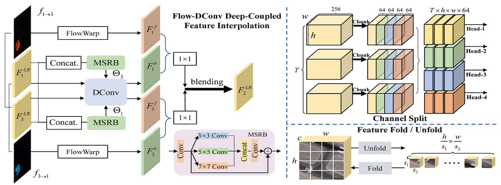 |
|
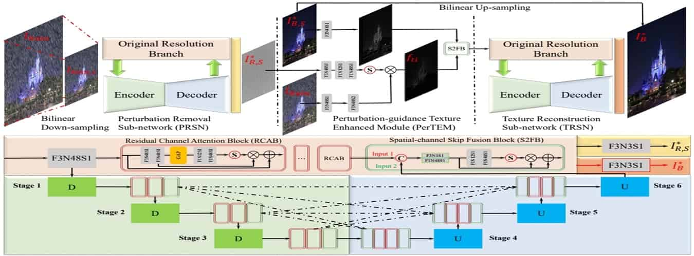 |
Image enhancement via associated perturbation removal and texture reconstruction learning |
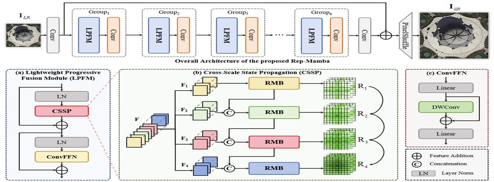 |
Rep-Mamba: Re-parameterization in vision mamba for lightweight remote sensing image super-resolution |
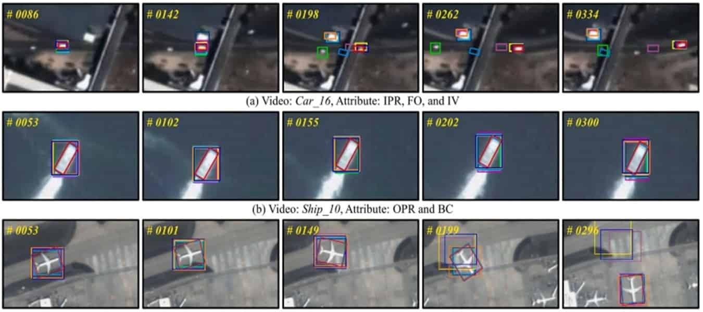 |
|
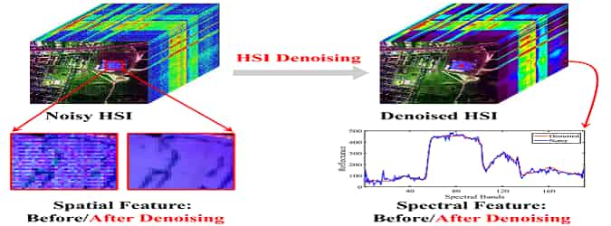 |
Hyperspectral image denoising: From model-driven, data-driven, to model-data-driven |
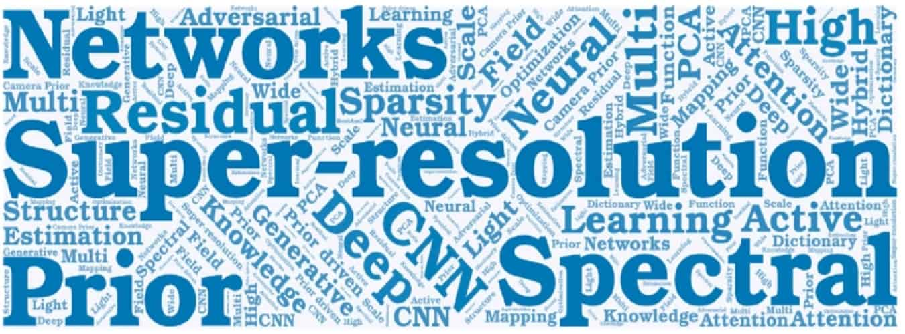 |
Spectral super-resolution meets deep learning: Achievements and challenges |
Awards and Honors
- 2024: Fundamental Research Project for Young Students, NSFC | 首批国自然青年学生基础研究项目（博士研究生） [新闻]
- 2025: Young Talent Support Program for Doctoral Students, CAST | 首批中国科协青年人才托举工程博士生专项计划
- 2024: First Prize of Wang Zhizhuo Innovative Talent Scholarship, WHU | 武汉大学“王之卓创新人才奖”一等奖
- 2023, 2024: First Prize of Graduate Academic Innovation Scholarship, WHU | 武汉大学“研究生学术创新奖”一等奖
- 2022: National Scholarship for Graduate Student, Ministry of Education | 博士研究生国家奖学金
- 2024: Pacemaker to Outstanding Graduate Students, WHU | 武汉大学优秀研究生标兵
- 2017, 2018, 2019: Pacemaker to Outstanding Students, CUG | 中国地质大学（武汉）优秀学生标兵
- 2017, 2018, 2019: National Encouragement Scholarship, CUG | 国家励志奖学金
Services
Peer Review:
- IEEE TPAMI, IJCV, TIP, TNNLS, TVCG, TGRS, TCSVT, TMM, TCYB, TMI, TOMM, TAI, 中国科学信息科学
- CVPR, NeurIPS, AAAI, ACM MM ...
Invited Talks
- 2024/05/31: Talk at Student Forum of China Society of Image and Graphics [CSIG学生会员分享论坛·遥感影像超分辨率重建]